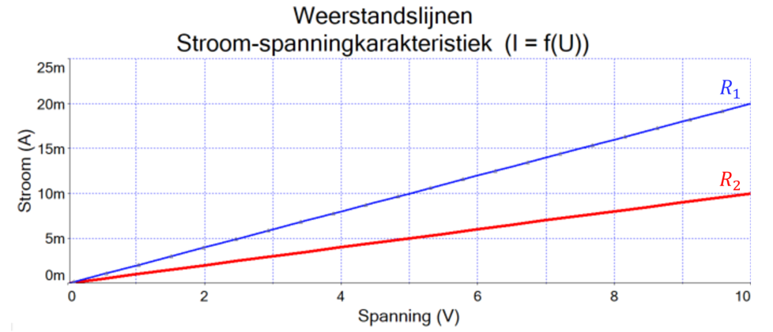
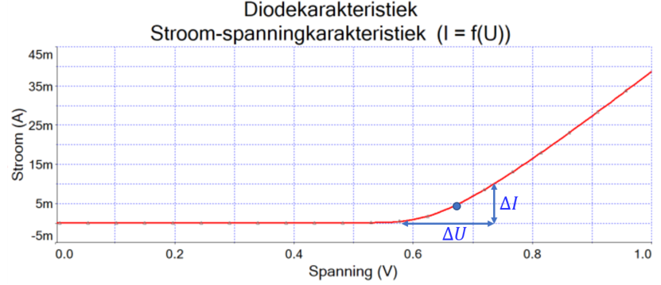

De karakteristiek van een component
Het gebied van elektronica kan worden onderverdeeld in verschillende categorieën. De meest elementaire verdeling is deze tussen signalen die worden vertegenwoordigd door binaire getallen, lees digitale signalen, en signalen die worden vertegenwoordigd door continu variabele hoeveelheden of analoge signalen. Digitale elektronica omvat alle rekenkundige en logische bewerkingen, zoals uitgevoerd in computers en rekenmachines. Analoge elektronica omvat vrijwel alle andere (niet digitale) signalen. Analoge elektronica bevat signaalverwerkende functies zoals versterking, differentiatie en integratie. Tegenwoordig is bijna alle informatie aangaande audio, video en data gedigitaliseerd voor transmissie en sommige soorten signaalverwerking. Maar het is ook waar dat we niet direct kunnen communiceren met de digitale wereld. Onze zintuigen werken analoog net als alle verschijnselen in de natuur. Hierdoor blijven analoge apparaten een belangrijke rol spelen in de moderne elektronica.
Wat is belangrijk?
Je herkent en bespreekt de basiskenmerken van analoge elektronica.
Je geeft de verschillen aan tussen een karakteristiek voor een lineaire component en een karakteristiek van een niet-lineaire component
Je legt uit wat bedoeld wordt met een karakteristiek.
Je verklaart het verschil tussen een DC- en een AC- weerstand.
Je verklaart het verschil tussen conventionele stroomzin en elektronenstroom**.**
De moderne elektronica had zijn intrede in 1907 toen Lee deForest voor het eerst een metalen rooster inbracht in een vacuüm buis. Hiermee was hij in staat om de stroom te controleren in een circuit.
Vandaag controleren elektronische systemen nog steeds de stromen en spanningen, maar maken gebruik van solid-state-apparaten. De term solid-state wordt gebruikt om aan te geven dat de elektronica bestaat uit halfgeleiders in plaats van buizen.
De kenmerken van elektronische basiscomponenten, zoals weerstanden en dioden, kunnen worden weergegeven in grafieken die de kenmerken vertonen in een meer intuïtieve manier dan de wiskundige vergelijkingen die hun gedrag beschrijven. In deze sectie bespreken we grafieken die bruikbaar zijn bij weerstanden en dioden.
Lineaire vergelijkingen
In algebra is een lineaire vergelijking een vergelijking dat een rechte weergeeft tussen 2 variabelen in de vorm van : . Hierbij stelt de afhankelijke variabele voor, de onafhankelijke variabele en de richtingscoëfficiënt van de helling die de rechte maakt met de as. Het snijpunt met de as wordt weergegeven door .

Figuur 1-1 : I-U karakteristiek voor twee weerstanden (blauw en rood)
Als de rechte die de vergelijking weergeeft door de oorsprong van het assenstelsel gaat (), dan kan de vergelijking omgevormd worden tot . Dit is analoog als de wet van Ohm die weergegeven wordt als :
Als de weerstandswaarde hierin vervangen wordt door de geleiding dan wordt volgende vergelijking bekomen:
Een lineaire component is een component waarbij een stijging van de stroom evenredig is met de spanning die er over staat (zoals gegeven door de wet van Ohm). Een grafiek die de relatie weergeeft tussen twee variabele grootheden van een component definieert een karakteristiek van deze component. Voor de meeste elektronische componenten verwijst deze karakteristiek naar een stroom-spanningskarakteristiek waarbij de stroom in functie van de aangelegde spanning wordt weergegeven zoals in figuur 1-1 is weergegeven.
Voorbeeld 1-1
Figuur 1-1 toont de -karakteristiek van twee weerstanden. Wat is de geleiding en weerstandswaaarde van de weerstand ?
Oplossing
De algemene formule voor een rechte is . De rechten gaan door de oorsprong bijgevolg is . De geleiding kan gevonden worden door de richtingscoëfficiënt te bepalen van de rechte die voorsteld. Deze is als volgt te vinden:
De richtingscoëfficiënt stelt de geleiding voor van de weerstand . De weerstandswaarde is dan gelijk aan:
Het begrip DC-weerstand
De gelijstroomweerstand (DC-weerstand) stelt een rechte lijn voor in de -karakteristiek. De richtingscoëfficiënt van de rechte is constant en stelt de geleiding van de weerstand voor. Het omgekeerde van de richtingscoëfficiënt stelt de weerstand voor. De verhouding van de spanning op een bepaald punt ten opzichte van de overeenstemmende stroom in dat punt wordt DC-weerstand genoemd. DC-weerstand is gedefinieerd door de wet van Ohm als
Het begrip AC-weerstand
Veel componenten hebben een curve die niet lineair is. Een diode is zo’n voorbeeld. Figuur 1-2 toont de karakteristiek van een diode welke niet lineair is. De weerstand van een niet-lineaire component wordt gedefinieerd als een kleine verandering van de spanning ten opzichte van een kleine stroomverandering. De AC-weerstand is dan als volgt te vinden:
De interne weerstand (AC-weerstand) wordt ook dynamische weerstand of small signal- of bulk-weerstand genoemd van de desbetreffende component. De AC-weerstand is afhankelijk van het specifiek punt dat in de - karateristiek wordt gebruikt om de weerstand te bepalen.
In figuur 1-2 varieert de richtingscoëfficiënt van de curve sterk. Dit houdt in dat het punt waarbij de AC-weerstand wordt gemeten gespecificeerd moet worden. Bijvoorbeeld de ac-weerstand in het punt en kan gevonden worden door rond dit punt een klein gebied af te baken waarbij de spanning en stroom wordt opgemeten. Dit is voorgesteld door de driehoek in figuur 1-2. De AC-weerstand wordt dan gevonden door de verhouding te nemen van de spanningsverandering ten opzichte van de stroomverandering. In formulevorm:

Figuur 1-2 : bepalen van in een punt van de niet-lineaire karakteristiek van een diode
Conventionele stroomzin of elektronenstroomzin gebruiken?
Stroom is de verhouding van ladingsverplaatsing per tijdseenheid. De originele definitie van stroom was gebaseerd op Benjamin Franklin’s geloof dat elektriciteit een onzichtbare substantie was dat zich verplaatste van de positieve pool naar de negatieve pool van een bron. Deze definitie werd algemeen overgenomen en in veel boeken is de stroomzin weergegeven vanuit dit gezichtspunt. Vandaag weet men dat elektrische stroom van de negatieve pool naar de positieve pool vloeit. Hierdoor wordt in sommige boeken de stroomzin aangeduid van negatief naar positief.
De controverse of het nu beter is de stroomzin in de ene zin dan wel in de andere zin weer te geven is een discussie die al jaren aan de gang is. In feite is het niet belangrijk in welke richting de stroomzin is weergegeven op een figuur. Komt men een negatieve stroomwaarde uit dan weet men dat de stroom in de andere richting vloeit.
Let wet op, in de praktijk is er maar één juiste manier om de stroommeter aan te sluiten in een stroomkring voor stroommetingen. In het verloop van de cursus wordt de polariteit van de stroommeters aangegeven waar dit noodzakelijk is.

Figuur 1-3 : Conventionele stroomzin versus elektronenstroomzin
Test jezelf : De karakteristiek van een component
Wat wordt bedoeld met de karakteristiek van een component?
Hoe ziet de karakteristiek van een weerstand met een hogere weerstandswaarde eruit ten opzichte van een karakteristiek met een lagere weerstandswaarde?
Wat is het verschil tussen een DC-weerstand en een AC-weerstand?